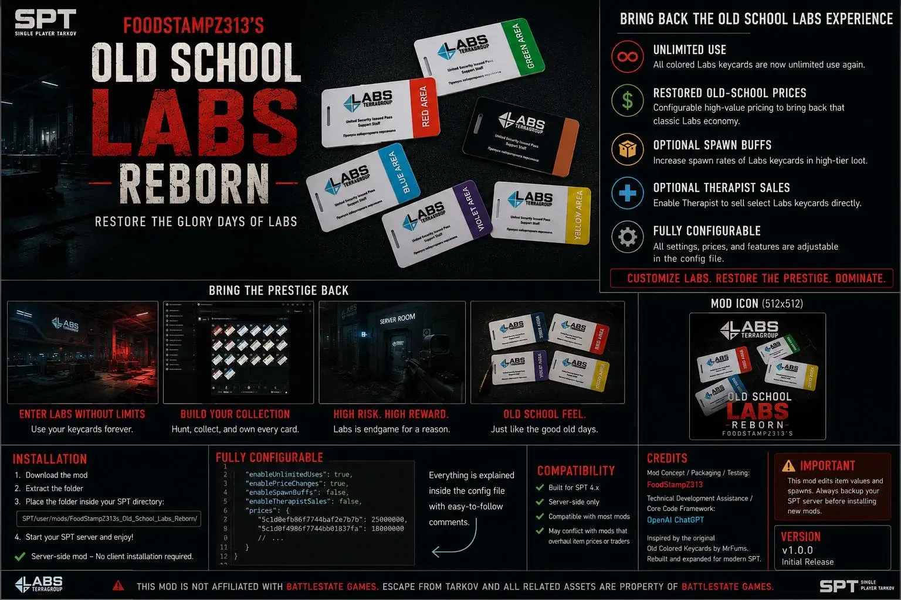
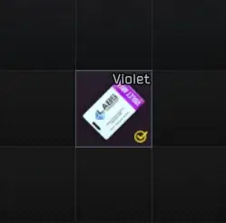

FoodStampZ313s Old School Labs Reborn
- Downloads
- 2,669
- Favourites
- 10
- Mod lists
- 13
FoodStampZ313’s Old School Labs Reborn
Brings back the glory days of Labs by restoring unlimited-use colored access cards, rebalancing old-school keycard values, and offering optional configurable Labs economy tweaks.

FEATURES
This mod specializes in restoring the old-school Labs experience.
• Unlimited Use Colored Labs Keycards
- Red Keycard
- Black Keycard
- Green Keycard
- Blue Keycard
- Yellow Keycard
- Violet Keycard
• Restored Old-School Keycard Economy
Each colored keycard has configurable handbook/flea values to bring back that rare and prestigious Labs loot feeling.
• Fully Configurable
Every major feature can be adjusted inside: config/config.json
INSTALLATION
- Download the mod.
- Extract the folder.
- Place the folder inside: SPT/user/mods/
- Start your SPT server.
COMPATIBILITY
Built for SPT 4.0.13 Server-side only.
Should work with most mods unless another mod directly overwrites the same keycard item values or prices.
Issues:
1.) UI issue FIXED

2.) Spawn buff functionality is currently being reworked for a future update.
3.) Therapist sales functionality is planned for a future update. See the roadmap below for more information.
Inspired by the original Old Colored Keycards concept by MrFums.
Rebuilt and expanded for modern SPT.
Feedback
This is my first public SPT mod release, so all feedback, bug reports, balancing suggestions, compatibility reports, and feature ideas are greatly appreciated!
Roadmap
v1.1.0 — Labs Keycard Room Buffs
- Optional buffs focused around colored Labs keycard rooms
- Configurable high-value item weighting
- Optional rare loot tuning for Labs-specific rewards
- Designed to avoid replacing general loot mods like SVM
v1.2.0 — Optional Therapist Sales
- Optional config setting for Therapist to sell Labs keycards
- Configurable prices and stock limits
- Possible barter trade support
- Designed to support configurable prestige economy balancing
v2.0.0 — Dynamic Labs Event Mode
- Optional high-risk/high-reward Labs event mode
- Possible Raider/boss spawn tuning
- Possible rotating Labs event presets
- Long-term goal: cleaner use-counter handling
Version
1.0.6
path correction
Version
1.0.5
ui number fix (999999) to 0 removing the use count item ui
added line of code
‘UnlimitedUsesValue“: 0,’
nuked from forge, try source code url